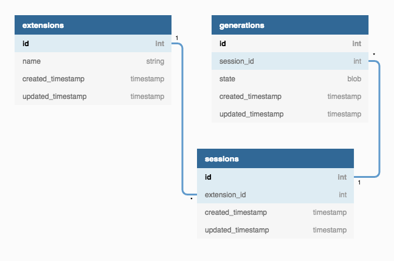

Date Storage
At the beginning of every generation in an evolution session, the state of all the chromosomes in a population is serialized into flat chunks of binary bytes using a robust library called FlatBuffers. State of the beginning of each generation is stored persistently to make it possible to go through the evolution process even after an evolution session ends.
This method of storage requires no parsing during deserialization, unlike other serialization methods like JSON, YAML, XML, etc. It also requires no copying into memory before processing, thus reducing load on CPU and memory significantly. Instead, the data structures can be constructed while the serialized binary data is being deserialized.
Moreover, the flat binary data contains no extra elements for formatting, such as curly braces, whitespaces, commas, and other symbols. This minimizes storage space requirement and makes it faster to save and load from the database. In other words, the data is stored in an efficient and compact manner.
A relational database engine, SQLite3, is used for storing information related to evolution sessions and generations, as shown in the figure below:
